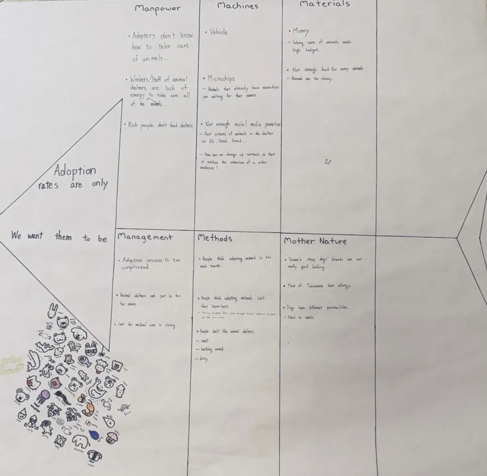
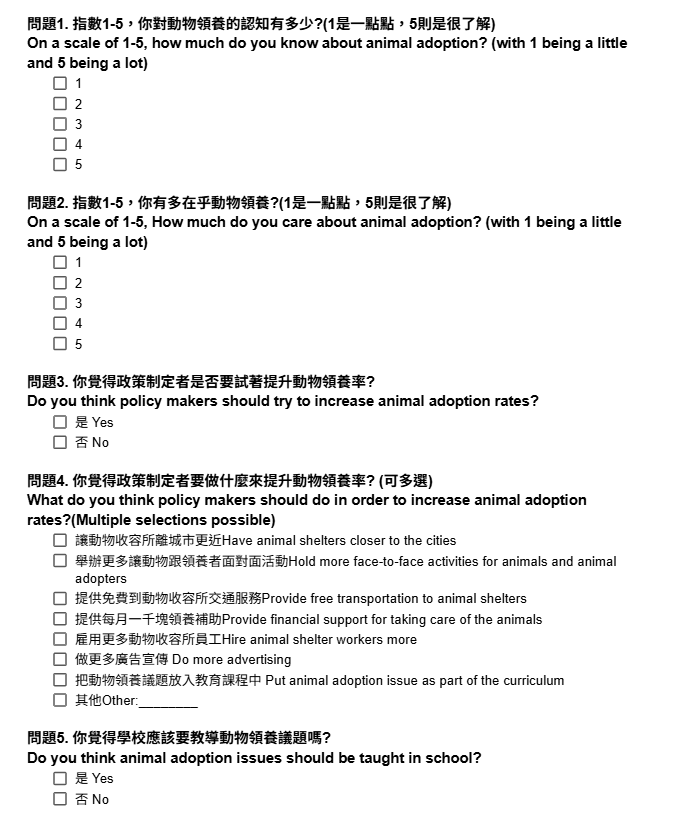

Naomi
Naomi
About Our Research ˚｡⋆
✶Learning to do research
Before this project, We knew animal adoption was important, but we did not understand the reasons behind low adoption rates.Through the research process, We learned that education and awareness play a major role.
We also learned how to use research tools such as fish-bone analysis, the 5 Whys method, and surveys.
We learned about how to design unbias questions, We believe this will be of great help in our future.
✶Video intro
✶Practice with DAAN Student
Video 1
Video 2
✶Fish-Bone
This is our original fish bone.
fish-bone picture

✶Survey Design
survey question picture

✶5 Whys
1. Why don’t young people care about the issue of animal adoption?
-Because they are not educated on it.
2. Why are they not educated on this issue?
-Because animal adoption isn’t talked about in curriculums.
3. Why isn’t it in curriculums?
-Because the people that design curriculums don’t want to add it.
4. Why don’t curriculum designers want to add animal adoption as a curriculum?
-Because they don’t think it’s as important as other stuff.
5. Why don’t they think it’s as important as other stuff?
-Because no one explained to them how it might be useful.